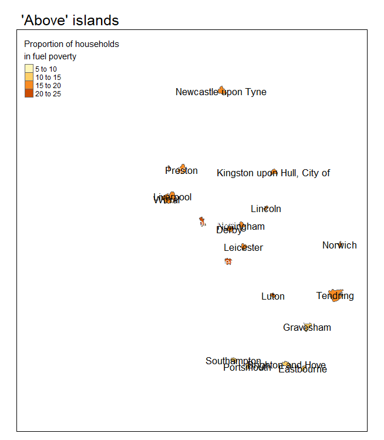

Fuel poverty is widespread in England - there are at least 5% of households living in fuel poverty in every local authority
But there are islands of difference, where fuel poverty is different in one area to all of its surrounding areas
There are 23 ‘islands of difference’ - 20 LAs are ‘above’ islands (fuel poverty is higher than all neighbours) and 3 ‘under’ islands (fuel poverty is lower than all neighbours)
Energy policy should be targeted at ‘above’ islands to improve their poor energy performance to the same level as their neighbours
Analysis
Code
### initial reading and cleaning of data# loading packagesif (!require("pacman")) install.packages("pacman")pacman::p_load(readxl, janitor, dplyr, stringr, sf, tmap, leaflet, htmltools, gifski)# reading fuel poverty datafuel_poverty <-read_xlsx("./data/sub-regional-fuel-poverty-tables-2023-2021-data.xlsx",sheet ="Table 2",skip =2)# cleaning datafuel_poverty <- fuel_poverty |>clean_names()fuel_poverty <- fuel_poverty |>rename(area_codes = area_codes_note_4,region = area_names,subregion = x3,area_name = x4,households_total = number_of_households,households_fp = number_of_households_in_fuel_poverty,households_fp_pct = proportion_of_households_fuel_poor_percent)fuel_poverty <- fuel_poverty |>filter(!(is.na(households_fp)))# removing areas that are a collection of smaller areas# only want the smallest level available in the datafuel_poverty <- fuel_poverty |>filter(!(str_detect(area_codes, "^E1") |str_detect(area_codes, "^E9")))# tidying up area name columnfuel_poverty <- fuel_poverty |>mutate(area_name =if_else(is.na(area_name), subregion, area_name)) |>select(-c(region, subregion))# reading in geospatial datalad_shp <- sf::st_read("./data/LAD_MAY_2023_UK_BUC_V2.shp", quiet =TRUE)# joining togetherfuel_poverty <-left_join(fuel_poverty, lad_shp,join_by(area_codes == LAD23CD))# tidying outputfuel_poverty <- fuel_poverty |>select(c(area_codes, area_name, households_total, households_fp, households_fp_pct, geometry))# converting to geospatial objectfuel_poverty_sf <- sf::st_as_sf(fuel_poverty)
Code
### calculating and plotting islands of difference# identifying the neighbours of each local authority districtfuel_poverty_sf_neighbours <-st_set_geometry(st_intersection(fuel_poverty_sf, fuel_poverty_sf), NULL)# tidying upfuel_poverty_sf_neighbours <- fuel_poverty_sf_neighbours |>rename(neigh_code = area_codes.1,neigh_name = area_name.1,neigh_households_total = households_total.1,neigh_households_fp = households_fp.1,neigh_households_fp_pct = households_fp_pct.1)# removing records where the area is matched to itselffuel_poverty_sf_neighbours <- fuel_poverty_sf_neighbours |>filter(area_name != neigh_name)# grouping fuel poverty into categories and calculating when they're differentfuel_poverty_sf_neighbours <- fuel_poverty_sf_neighbours |>mutate(area_group =case_when( households_fp_pct <5~"0 to 5", households_fp_pct <10~"5 to 10", households_fp_pct <15~"10 to 15", households_fp_pct <20~"15 to 20", households_fp_pct <25~"20 to 25",TRUE~"Over 25"),neigh_group =case_when( neigh_households_fp_pct <5~"0 to 5", neigh_households_fp_pct <10~"5 to 10", neigh_households_fp_pct <15~"10 to 15", neigh_households_fp_pct <20~"15 to 20", neigh_households_fp_pct <25~"20 to 25",TRUE~"Over 25"),group_diff =case_when( area_group == neigh_group ~"Same", households_fp_pct > neigh_households_fp_pct ~"'Above' islands", households_fp_pct < neigh_households_fp_pct ~"'Under' islands") )# identifying which areas are completely surrounded by different neighboursneighbours_summary <- fuel_poverty_sf_neighbours |>group_by(area_codes, group_diff) |>summarise(n =n()) |>mutate(freq = n /sum(n)) |>filter(group_diff !="Same"& freq ==1) |>select(-c(n, freq))neighbours_summary <-left_join(neighbours_summary, fuel_poverty_sf,join_by(area_codes == area_codes))# joining islands to full dataset for plottingneighbours_summary <- sf::st_as_sf(neighbours_summary)st_set_crs(neighbours_summary, 27700)fuel_poverty_sf$group_diff <-"All"fuel_poverty_sf <-rbind(fuel_poverty_sf, neighbours_summary)fuel_poverty_sf <- fuel_poverty_sf |>mutate(map_labels =case_when( group_diff =="All"~"",TRUE~ area_name ))tmap::tmap_mode("view")fuel_anim <- fuel_poverty_sf |>tm_shape() +tm_polygons(col ="households_fp_pct",title ="Proportion of households\nin fuel poverty") +tm_facets(along ="group_diff", free.coords =FALSE) +tm_text("map_labels", size =1)tmap_animation(fuel_anim, filename ="fuel_anim.gif", delay =400)
Code
knitr::include_graphics("fuel_anim.gif")

Things I would have done with more time:
Include greyed outline of UK and other local authorities in the animated map
Improved text labels in the map
I spent most of the time creating the below interactive leaflet map but it can’t render in the HTML webpage because of a conflict between knitr and leaflet. It can be fixed by installing an older version of knitr but I didn’t want to mess around with package versions. Screenshot below to show what it looks like in RStudio